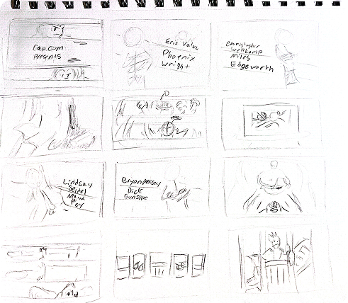
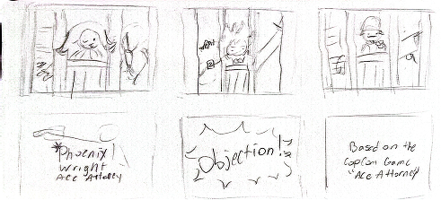
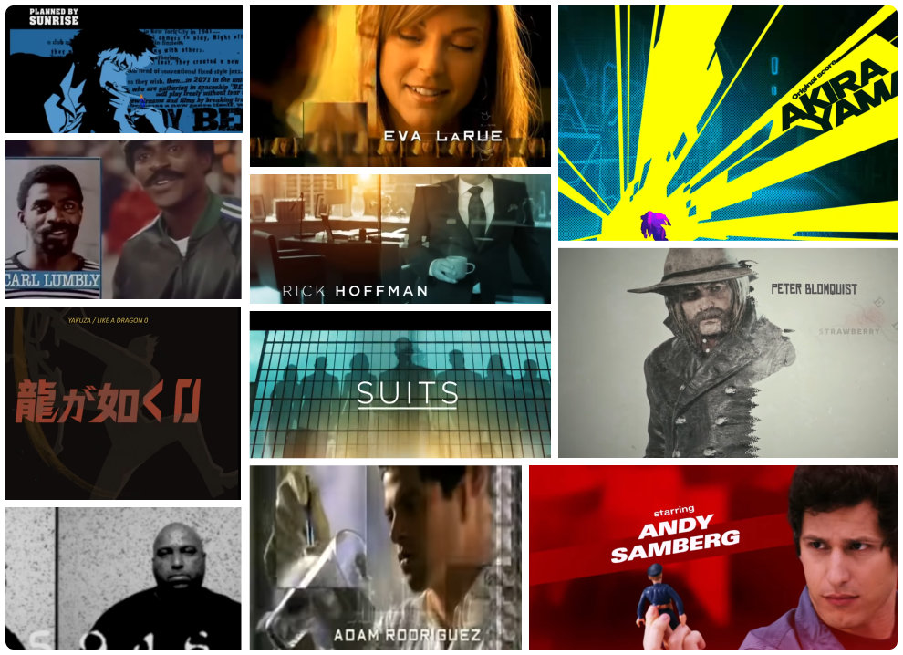

Ace Attorney Title Sequence
Concept
Create an original title sequence for a movie, show, or series. The series chosen may be an original concept or something pre-existing.
Project Goals
The goal we settled on was to create a title sequence of the first game in the Ace Attorney series, inspired by mystery and crime series and shows.
Background
Ace Attorney is a series developed and originally released for the Game Boy Advance in 2001. It follows rookie attorney, Phoenix Wright, who defends his clients accused of murder by looking for the contradictions in testimonies and presenting evidence during trials. The main cast consists of Wright, his assistant and spirit medium Maya Fey, rival prosecutor Miles Edgeworth, and police homicide detective Gumshoe.
Collaboration
I partnered up with friend and classmate Sofia Orlando for this project. I focused mainly on the overall motion design, animation, and 3d integration, while my teammate provided the sketches, vector visuals, and 2d assets.
Sketches


Moodboard
We wanted to reflect both the game’s funny and playful nature as well as its more serious tones, and make a semi-serious, exciting intro, while also keeping it a bit toned down and camp. We referenced show openings like Brooklyn 99, Cowboy Bebop, and Law and Order.

Challenges
I had no previous experience using various 3d models in Blender and importing them into After Effects. Many of the file types differed, and needed proper conversion first. This was an incredibly difficult hurdle to cross at first, but after extended research and applying what I’d learned, it ended up working almost seamlessly, and I acquired a new skill.
Outcome
The final animation was the result of lots of hard work and great communication. It is a project we are both very proud of, and it was a lot of fun to create. I definitely feel I came out of this with a strengthened sense of motion, timing, and I learned a ton of transferable knowledge about the bridge between 3d assets and Adobe After Effects!